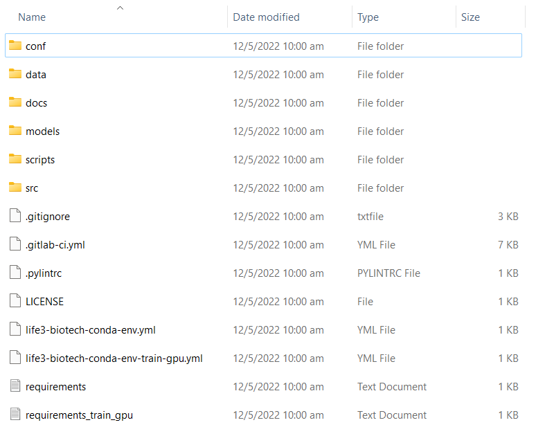
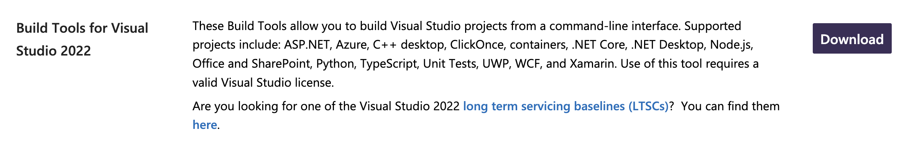
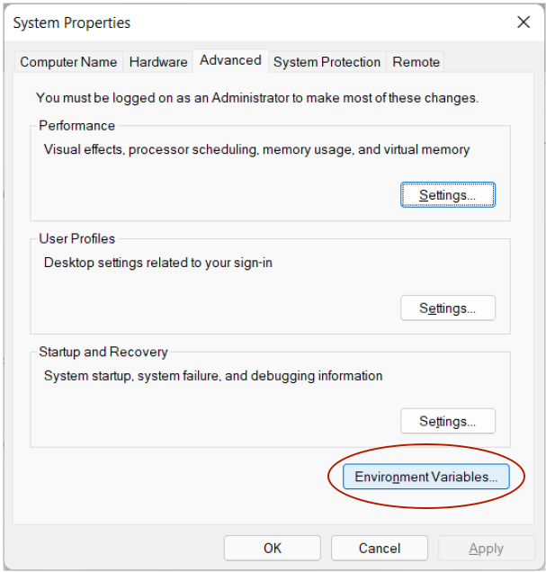
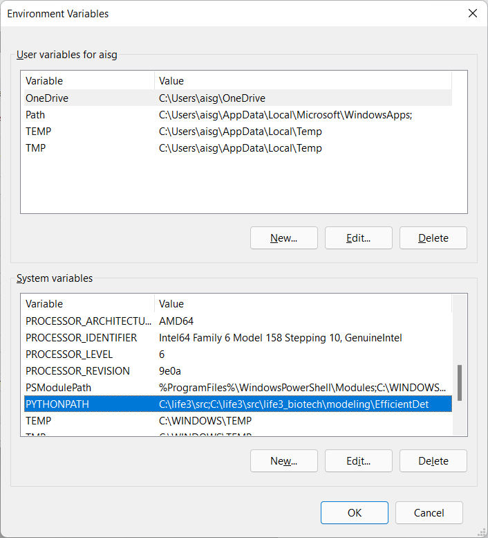

1.1. From the official Conda documentation download the Windows installer for Python version 3.7.
1.2. Once the download is complete, double-click the .exe file. You should see this installer window:
1.3. Use the default options for the installation. (The 'Destination Folder' may be left as the default recommended in your system. The screenshot below is just an example.)


1.4. When installation is finished, from the Start menu, open Anaconda Prompt.
1.5. To test the installation, run the following command conda list. You should see an output similar to the following:

2.1. After extracting life3-initial-release.zip to a folder, e.g. C:\ai_engine, you should see the following folder structure. (Some files seen below may not be present in the initial deployment package.)

2.2. Open Anaconda Prompt and change the working directory to the location where the files were extracted using the following command:
cd C:\ai_engine
2.3. Enter the following command to create a new conda environment and install the relevant dependencies required by both the training & inference modules:
conda env create -f life3-biotech-conda-env.yml
2.4. Once the environment creation is complete, run conda env list and verify that the environment named life3-biotech is listed.
2.5. Run conda activate life3-biotech to activate the environment. It should now appear as the activated environment as per the screenshot below. The Conda environment setup is now complete.

3.1. If this is the first time the AI engine is being set up in the current environment, Microsoft's Build Tools for Visual Studio must be installed. Download it from here.

3.2. Open the .exe file once the download is complete. Follow the steps until you reach this screen:

Select the "Desktop development with C++" option and click Install. The installation process may take a while.
3.3. Once installation is complete, you should see the below dialog box. Restart the computer before proceeding with the next steps.

3.4. Open Anaconda Prompt and run the following commands to change the working directory to the location where the files were extracted and build the Cython files required by EfficientDet:
cd C:\ai_engine
python src/life3_biotech/modeling/EfficientDet/setup.py build_ext --inplace
You should see an output similar to the following:

You may also see a build subfolder created in the working directory, e.g. C:\ai_engine\build.
3.5. In order to use the training module, data must exist in the \data subfolder. Copy the training data into its respective subfolder in the \data\uploaded subfolder. An example of the folder structure is as follows:

4.1. Search for "environment variables" in the Windows search bar. Open "Edit the system environment variables" under Control Panel.

4.2. The following window will appear. Click on the "Environment Variables..." button.

4.3. The following pop-up dialog will appear. Click on the "New..." button below the "System variables" list.

4.4. The following pop-up dialog will appear. In the 'Variable name' field, enter PYTHONPATH. Assuming the code base has been extracted to C:\ai_engine, in the 'Variable value' field, enter C:\ai_engine\src;C:\ai_engine\src\life3_biotech\modeling\EfficientDet. Click "OK".
4.5. You should see the new variable reflected in the "System variables" list. Click "OK".
